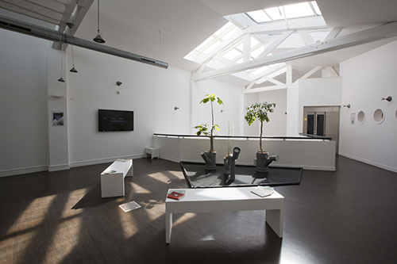
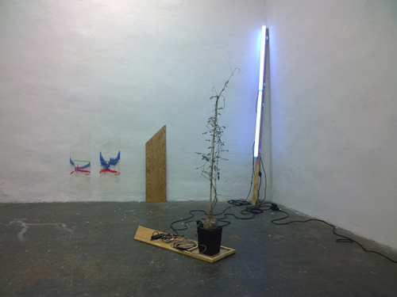

Concerto pour montée de sève, Premiers mouvements atmosphériques.
Concerto pour montée de sève, Premiers mouvements atmosphériques.
Working progress Nicolas Bralet, François Collin et sabrina Issa
Château Ephémère - Fabrique sonore et numérique - Carrières-sous-Poissy,
juin et octobre 2016, photo. Delphine Chevrot.
 L 2m50 - l 2m40 - H 5m).jpg) Résidence du 06/2016 - 08/2016 de Cha-wen Tsai et Nicolas Bralet.
Résidence du 06/2016 - 08/2016 de Cha-wen Tsai et Nicolas Bralet.Soulangh Cultural Park, Jiali district de Taïnan (Taïwan).
L’exposition «Promenade» a été réalisée à l’issu de 3 mois de résidence de création au Soulangh Cultural Park à Jiali, un district de la ville de Taïnan (Taïwan).
Le projet réalisé in situ, est lié àl’identité du parc et plus largement avec l’environnement de Jiali.
 ECRITURES SONORES_HEMISPHERES#2 , Trio pour montée de sève, avec Nicolas Bralet, François Collin et sabrina Issa, mai 2016, photo. Delphine Chevrot.
 After work #2,
L'atelier de Chromatographies, Delphine Chevrot
After work #2,
L'atelier de Chromatographies, Delphine ChevrotChâteau Ephémère, Carrières-sous-Poissy, déc. 2014.
 Avant-premiere
, avec Nicolas Bralet, Delphine Chevrot, Sabrina Issa et Fred Maury,
Avant-premiere
, avec Nicolas Bralet, Delphine Chevrot, Sabrina Issa et Fred Maury, Château Vanderbilt - Fabrique sonore et numérique, à Carrières-sous-Poissy, juin 2014.
Contre-nature , Variation pour montée de sève, Sabrina Issa
Syndicat Potentiel Strasbourg, mai-juin 2014
11ème Semaine du Son , Nicolas Bralet
Auxerres, fév. 2014.
Le vivant et son énergie, INRA Versailles-Grignon, Versailles, 2013.
Détail de l'installation, vue du gyrophare à LED et du dispositif de captation météo.
 Le vivant et son énergie
, INRA Versailles, Versailles, 2013
Le vivant et son énergie
, INRA Versailles, Versailles, 2013Conçue tel un protocole expérimental, la Station permet de rendre visible les fluctuations climatiques et leurs incidences sur un arbre témoin, le Ginkgo biloba. La vitesse de rotation et la couleur du gyrophare qui surplombe l'installation est liée à l'activité de montée de sève de l'arbre sur le site.

Sculpture en l'Ile, Nicolas Bralet, Solo pour montée de sève, Andrésy, 2012.
Version "phytotron", intégrant un arrosage d'appoint.
Biennale la Science de l'Art, Pièce sonore pour montée de sève, Nicolas Bralet, François Collin, Sabrina Issa et Hugo Roger, Essonne 2011.
Composition sonore spatialisée sur deux hauts-parleurs waterproof à partir de la vitesse de montée de sève de deux Cussonia spicata.

Mains d'Œuvres, résidence de recherche et de création, avec Nicolas Bralet, Sabrina Issa, Bruno Persat, Sonia Levy, Emilie Schalck et Gratianne Scherdlin, 2009.